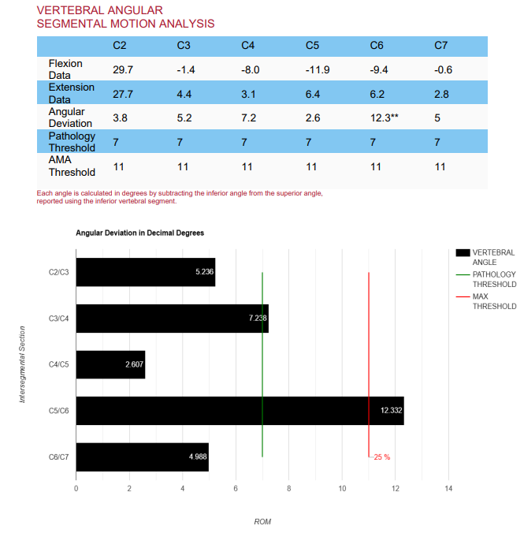

A Normal MRI, and Still No Answers
One of the most frustrating things a patient can hear after a car accident or fall is "your MRI looks fine." The pain is real, the neck feels unreliable, and yet the picture shows nothing that explains it. A normal MRI is good news about your discs, nerves, and spinal cord. It does not always settle the question of whether the neck is moving the way it should.
This article explains what neck instability is, why an MRI can miss it, what the research says, and how motion is evaluated. It is educational information, not a recommendation for any one person.
What Neck Instability Means
The vertebrae in your neck are held together by ligaments, the joint capsules, and the discs between them. Together they let the neck move freely while keeping each bone aligned with its neighbors. When those structures are stretched or torn, as can happen in a collision, a vertebra may glide or tilt farther than it should when you bend your head forward or back. That excess motion is what clinicians mean by instability or ligament laxity.
It does not mean the spine is about to come apart, and it is not the cause of every case of neck pain. It is one possible explanation, and one that is easy to overlook because it only shows when the neck moves.
Why an MRI Can Miss It
An MRI is a snapshot. You lie on your back, in a neutral position, and the scanner records the tissues at rest. It is excellent for discs, nerves, the spinal cord, and many soft tissues. It is not designed to show how far one vertebra slides or tilts relative to the next when you flex and extend your neck. A neck can look aligned and orderly in a still image and still move too much in real life.
Worth knowing: This is not a criticism of MRI. It answers a different question. MRI shows what the tissues look like at rest, while a motion study shows how the segments behave during movement. Many patients need one, some need both, and some need neither.
What the Research Shows
A retrospective study of 111 patients and 555 cervical levels at a spine clinic compared neutral X-rays, flexion and extension X-rays, and MRI for detecting vertebral slippage (cervical spondylolisthesis). Its main findings were:
- Flexion and extension X-rays identified 17 levels with slippage (22%) that neutral X-rays alone had missed.
- MRI missed about 38% of the levels with slippage that the X-rays identified.
- The authors concluded that flexion and extension X-rays are a useful addition to standard X-rays and MRI when instability is suspected or when other studies do not explain a patient's pain.
There are important limits, and they matter. The study looked at degenerative slippage in a clinic population, and it excluded patients with acute trauma or prior neck surgery, so it does not prove how often an MRI misses ligament injury after a collision. It was a single-center, retrospective review, and it did not follow patients' symptoms or outcomes. The study also counted instability using specific cutoffs (at least 2 mm of slippage on neutral films, or at least 1 mm of change between flexion and extension films). Different studies and guidelines use different cutoffs, so 1 mm should not be read as a universal dividing line.
What the study does support is a simple, practical point: a still MRI is not the whole story when the question is motion.
How Instability Is Evaluated
- History and examination. The first step is understanding how you were hurt, what your symptoms are, and what your exam shows. These also decide whether motion imaging is likely to help.
- Flexion and extension X-rays. If appropriate, X-rays are taken with the neck bent forward and backward within a range you can comfortably manage.
- Digitization and measurement. The images are digitized in Symverta software, which measures translation (sliding) and angular motion at each spinal level.
- Comparison with published reference values. The measurements are compared with published thresholds, so the finding rests on numbers and not on a visual impression.
- Explanation of the findings. The results are reviewed with you in plain language, along with what they may mean for your care.
In selected cases of significant spinal trauma, real-time motion imaging may also be used. You can read more in the article on Digital Motion X-Ray. Because X-rays use radiation, they are used only when the clinical question justifies them and are avoided during pregnancy.
What It Can Mean for You Now
Excess motion in a neck segment can be associated with symptoms such as:
- Neck pain that lingers or keeps returning after an injury
- A feeling that the neck is unsteady, heavy, or needs support
- Pain or catching with certain movements
- Headaches or other symptoms that follow neck movement
- Symptoms that do not match a normal MRI
Not every measurable finding explains a person's pain, and many people have variations in motion without symptoms. That is why findings are always interpreted together with your history and examination. When instability is confirmed and relevant, it helps guide an individualized plan of care. If the findings are significant, or if there are signs that nerves or the spinal cord are involved, the right step may include a referral for a surgical opinion. No particular outcome can be guaranteed.
What It May Mean Down the Road
Knowing whether a neck segment is moving too much matters for the long term as well. Research on long-term outcomes continues to develop, and I do not want to overstate it. What is reasonable to say is that a problem that is never identified cannot be addressed, and that a clear measurement gives you and your clinicians a baseline to compare against if symptoms change. Early, accurate information also helps you avoid treatment that does not fit the actual problem.
Who May Want an Evaluation
- Neck pain that has persisted after a collision, fall, or other trauma
- Ongoing symptoms despite a normal MRI
- A sense of neck instability, catching, or pain that follows specific movements
- Imaging that does not seem to explain how you feel
If you were recently injured and have severe pain, weakness, numbness, trouble walking, or loss of bladder or bowel control, seek urgent medical care first.
Where Dr. Moore's Training Fits
Dr. Moore is a Fellow in Primary Spine Care (FPSC) and has completed radiology mini-fellowships through SUNY Jacobs in neuroradiology, advanced MRI of the spine, and musculoskeletal radiology, along with specialized training in X-ray digitization methodology. In practice, that background helps him decide when motion imaging is likely to add useful information and how to read it alongside an MRI. You can read more on the About page and the whiplash and trauma page, and see how colorized exhibits make MRI findings easier to follow in the article on MRI colorization.
Common Questions
Can an MRI show neck instability?
An MRI can show discs, nerves, the spinal cord, and soft tissues very well, but it is usually taken while you lie still in one position. Because instability is about how much one vertebra moves relative to its neighbor, motion studies such as flexion and extension X-rays are often added when instability is suspected.
If my MRI was normal, do I need X-rays too?
Not always. Your history and examination decide whether motion imaging is likely to answer a useful question. It is more often considered when symptoms persist after an injury or do not match what the MRI shows.
Does neck instability mean I need surgery?
Not necessarily. Many people with measurable motion changes are managed conservatively. Significant instability, or signs that nerves or the spinal cord are affected, may call for a surgical opinion, and an evaluation helps sort out which situation applies.
Is there radiation with flexion and extension X-rays?
Yes. Like any X-ray, they use ionizing radiation, so they are used only when the clinical question justifies it and are avoided during pregnancy. Tell your clinician if you are or may be pregnant.
If your neck has not felt right since an injury, or your imaging does not seem to match your symptoms, you are welcome to request an evaluation.
Reference
Alvarez AP, Anderson A, Farhan SD, Lu Y, Lee YP, Oh M, Rosen C, Kiester D, Bhatia N. The Utility of Flexion-Extension Radiographs in Degenerative Cervical Spondylolisthesis. PubMed ID 35276718. Full text.